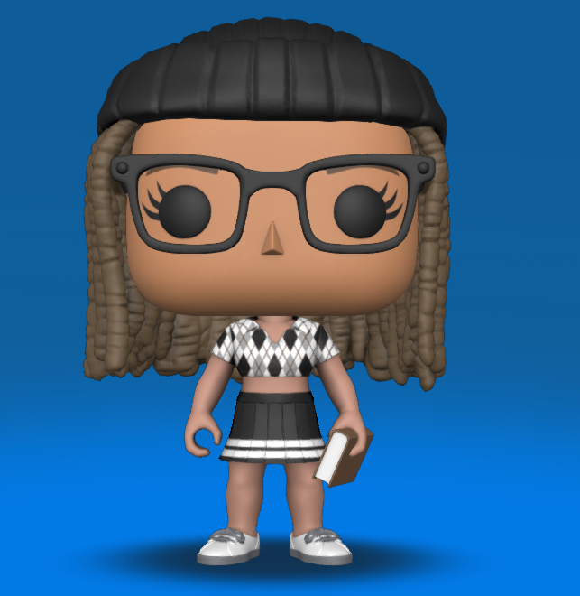
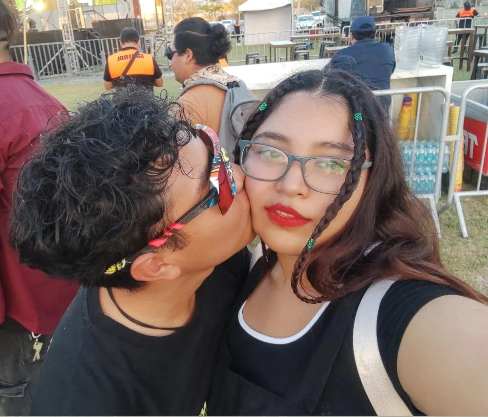
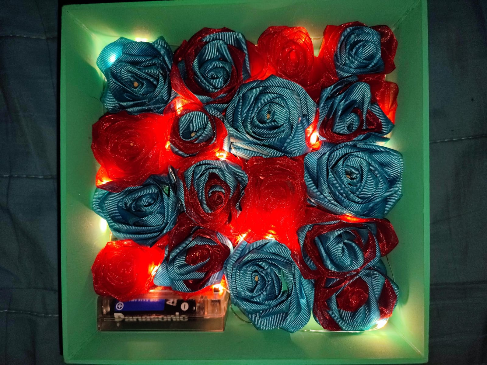
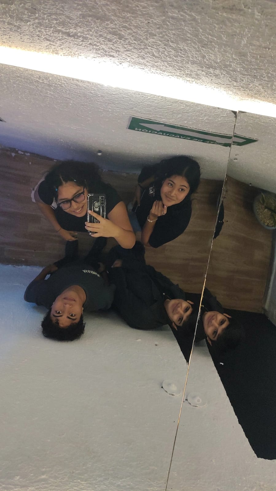
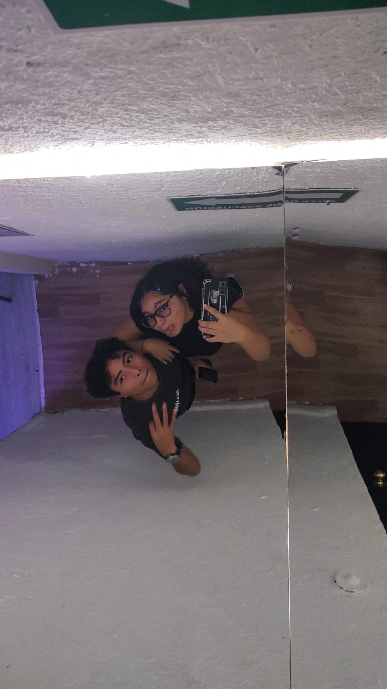
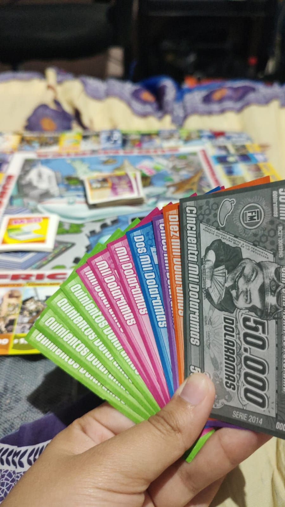
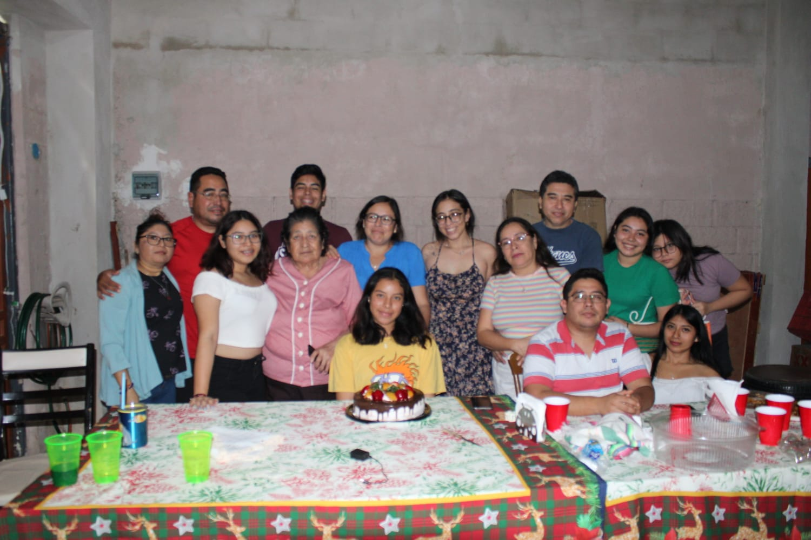

Hey, I'm Genny ✨
Welcome to my personal space
Un poco sobre mí 💫
¡Hola! Soy estudiante y me apasiona la tecnología. Este es un pequeño rincón independiente que armé para compartir un poco de mi mundo. Me encanta pasar el tiempo libre escuchando música, leyendo y conociendo nuevos lugares, al igual que voy dándole vida a lo que pueda decorar acorde a mis gustos. Considero que soy una persona muy comprensiva, flexible, amorosa, enojona, entre otras cosas jejeje.
Lo que disfruto hacer 🎮
- Leer libros: Me encanta perderme en las páginas de los libros ya que se puede escapar de este mundo y viajar a nuevos universos.
- Hardware & Electrónica: Desarmar, limpiar y darle mantenimiento preventivo a Laptops.
- Música & Ritmo: Ponerme los audífonos con un buen playlist mientras me concentro en ir observando los pequeños detalles de las cosas.
- Proyectos Creativos: Imaginar ideas de cosas poder hacer, de lugares por descubrir, libros por leer, y sobretodo ideas de lugares por conocer.
Mis favoritos actuales 🎧
La música que me acompaña:
Suelo escuchar música electrónica y música con buen ritmo que me ayude a desestresarme o hasta a poder concentrarme. ¡Una buena playlist lo cambia todo!
Estética e Inspiración:
Me llaman mucho la atención lo hermoso de los paisajes, amaneceres, atardeceres, los bonitos lugares, al igual que descubrir nuevas canciones para añadir a mi playlist que me inspire hacer las cosas. Creo que los pequeños detalles siempre serán un buen regalo para las personas y hasta para los lugares ya que siempre hay que dejar nuestra huella en cualquier lugar al que vamos y siempre tiene que ser una buena con la que te recuerden de una bonita manera.
Mi Galería Visual 🖼️
Espacio dedicado a capturas de cosas que me gustan, bonitos recuerdos, lecturas o mis fotos favoritas.





